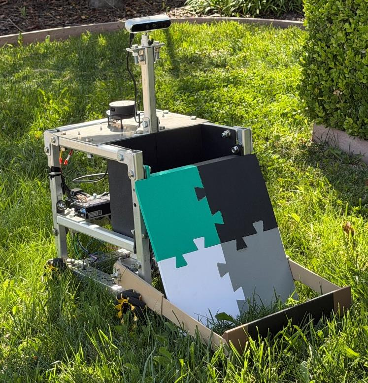

Autonomous Robotics · Computer Vision · Embedded Systems
Autonomous Vision-Based Litter Collection Rover
Designed and built a three-person senior-project autonomous rover capable of detecting, navigating to, and collecting ground-level litter.
The system integrates an NVIDIA Jetson Orin Nano running ROS 2 with an STM32 real-time control platform, YOLO-based object detection, LiDAR mapping, mecanum-wheel mobility, autonomous path planning, and a two-degree-of-freedom collection mechanism.
View Project →